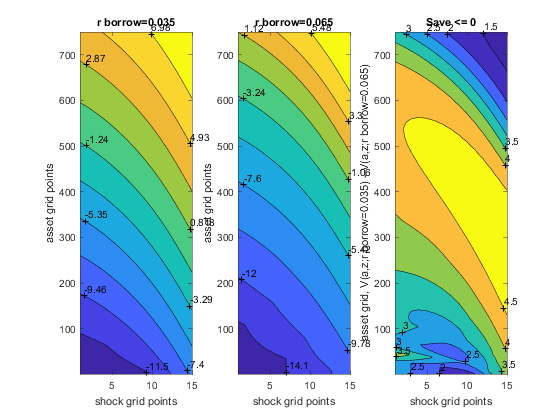
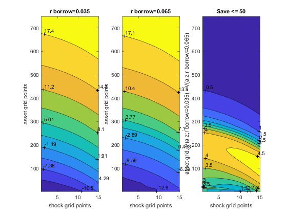

Test Borrowing Default (Save + Borr Distribution)
back to Fan's Dynamic Assets Repository Table of Content.
@seealso
- test speed: fsi_abz_ds_vecsv_speed
- test joint RANDOM: fsi_abz_ds_vecsv_joint_rand
- test price no default CROSS: fsi_abz_ds_vecsv_price_nbc_cross
- test price default CROSS: fsi_abz_ds_vecsv_price_default_cross
- test interest rate no default: fsi_abz_ds_vecsv_nbc
- test interest rate no default CROSS: fsi_abz_ds_vecsv_nbc_cross
- test interest rate default: fsi_abz_ds_vecsv_default
- test interest rate default CROSS: fsi_abz_ds_vecsv_default_cross
- test shock default (very low cmin): fsi_abz_ds_vecsv_shk_default_lowcmin
- test shock no default: fsi_abz_ds_vecsv_shk_nbc
- test shock no default CROSS: fsi_abz_ds_vecsv_shk_nbc_cross
- test shock default: fsi_abz_ds_vecsv_shk_default
- test shock default CROSS: fsi_abz_ds_vecsv_shk_default_cross
- test preference no default: fsi_abz_ds_vecsv_pref_nbc
- test preference no default CROSS: fsi_abz_ds_vecsv_pref_nbc_cross
- test preference default: fsi_abz_ds_vecsv_pref_default
- test preference default CROSS: fsi_abz_ds_vecsv_pref_default_cross
- test preference default (very low cmin): fsi_abz_ds_vecsv_pref_default_lowcmin
Contents
Loop over Savings Bounds
clear all; close all; ar_fl_a_max = linspace(0,50,2); for fl_a_max = ar_fl_a_max
Generate Data A: Varying Savings Bounds, Compare Two Borrowing Interest Rates along all AZ points
Do not allow for savings, Compare V(a,z;low borrow r) vs V(a,z;high borrow r)
% Number of Borrowing Interest Rates it_size = 2; % Do not Allow for Savings ar_fl_a_max = zeros([1,it_size]) + fl_a_max; % fl_z_r_borr_poiss_mean: see fft_gen_discrete_var ar_fl_z_r_borr_max = linspace(0.035, 0.065, it_size); % default or not bl_default = true; ar_bl_default = zeros([1,it_size]) + bl_default; % cmin fl_c_min = 0.01; ar_fl_c_min = zeros([1,it_size]) + fl_c_min; % borrow bound fl_b_bd = -30; ar_fl_b_bd = zeros([1,it_size]) + fl_b_bd; % Accuracy ar_fl_z_r_borr_n_hg = 1; ar_it_a_n_hg = zeros([1,length(ar_fl_z_r_borr_n_hg)]) + 750; it_z_wage_n = 15; % other parameters fl_crra = 1.5; fl_beta = 0.96; fl_r_save = 0.025; % Results Map Collection cl_result_map = []; it_cl_res_map_ctr = 0; % Simulate Model for it_cur_param = 1:1:length(ar_bl_default) disp('xxxxxxxxxxxxxxxxxxxxxxxxxxx'); disp(['bl_default = ' num2str(ar_bl_default(it_cur_param))]); disp(['fl_c_min = ' num2str(ar_fl_c_min(it_cur_param))]); disp(['fl_b_bd = ' num2str(ar_fl_b_bd(it_cur_param))]); disp(['fl_a_max = ' num2str(ar_fl_a_max(it_cur_param))]); disp(['z_r_borr_max = ' num2str(ar_fl_z_r_borr_max(it_cur_param))]); disp('xxxxxxxxxxxxxxxxxxxxxxxxxxx'); disp(''); disp(''); disp(''); disp(''); % Call Default Parameters <https://fanwangecon.github.io/CodeDynaAsset/m_az/paramfunc/html/ffs_abz_set_default_param.html ffs_abz_set_default_param> bl_input_override = true; it_param_set = 9; [param_map, support_map] = ffs_abz_set_default_param(it_param_set); % Changing Savings Allowed param_map('fl_a_max') = fl_a_max; % Borrowing Interest Rates, Same borrow and save rate, no random rate param_map('fl_z_r_borr_max') = ar_fl_z_r_borr_max(it_cur_param); param_map('fl_z_r_borr_min') = ar_fl_z_r_borr_max(it_cur_param); % Borrowing Parameters param_map('bl_default') = ar_bl_default(it_cur_param); param_map('fl_b_bd') = ar_fl_b_bd(it_cur_param); param_map('fl_c_min') = ar_fl_c_min(it_cur_param); param_map('fl_beta') = fl_beta; % Display Parameters support_map('bl_display') = false; support_map('bl_display_final') = false; support_map('bl_time') = true; support_map('bl_profile') = false; support_map('bl_graph_funcgrids') = false; for it_accuracy = 1:length(ar_it_a_n_hg) % Accuracy Regular param_map('it_a_n') = ar_it_a_n_hg(it_accuracy); param_map('it_z_wage_n') = it_z_wage_n; param_map('fl_z_r_borr_n') = ar_fl_z_r_borr_n_hg(it_accuracy); it_z_n = param_map('it_z_wage_n') * param_map('fl_z_r_borr_n'); param_map('it_z_n') = it_z_n; disp('xxxxxxxxxxxxxxxxxxxxxxxxxxx'); disp(['it_a_n = ' num2str(ar_it_a_n_hg(it_accuracy)) ', it_z_n = ' num2str(it_z_n)]); disp('xxxxxxxxxxxxxxxxxxxxxxxxxxx'); % Call Grid Generator <https://fanwangecon.github.io/CodeDynaAsset/m_az/paramfunc/html/ffs_abz_get_funcgrid.html ffs_abz_get_funcgrid> [armt_map, func_map] = ffs_abz_get_funcgrid(param_map, support_map, bl_input_override); % Call Dynamic Programming Problem <https://fanwangecon.github.io/CodeDynaAsset/m_az/solve/html/ff_abz_vf_vecsv.html ff_abz_vf_vecsv> result_map = ff_abz_vf_vecsv(param_map, support_map, armt_map, func_map); % Call Distribution CProgram result_map = ff_az_ds_vecsv(param_map, support_map, armt_map, func_map, result_map, bl_input_override); % Collect it_cl_res_map_ctr = it_cl_res_map_ctr + 1; cl_result_map{it_cl_res_map_ctr} = result_map; end % Snap snapnow; end
xxxxxxxxxxxxxxxxxxxxxxxxxxx
bl_default = 1
fl_c_min = 0.01
fl_b_bd = -30
fl_a_max = 0
z_r_borr_max = 0.035
xxxxxxxxxxxxxxxxxxxxxxxxxxx
xxxxxxxxxxxxxxxxxxxxxxxxxxx
it_a_n = 750, it_z_n = 15
xxxxxxxxxxxxxxxxxxxxxxxxxxx
Elapsed time is 7.219154 seconds.
Elapsed time is 1.103031 seconds.
mean sd coefofvar min max pYis0 pYls0 pYgr0 pYisMINY pYisMAXY p0_1 p1 p5 p10 p15 p20 p25 p35 p50 p65 p75 p80 p85 p90 p95 p99 p99_9 fl_cov_cl_mt_val fl_cor_cl_mt_val fl_cov_cl_mt_pol_a fl_cor_cl_mt_pol_a fl_cov_cl_mt_coh fl_cor_cl_mt_coh fl_cov_cl_mt_pol_c fl_cor_cl_mt_pol_c fracByP0_1 fracByP1 fracByP5 fracByP10 fracByP15 fracByP20 fracByP25 fracByP35 fracByP50 fracByP65 fracByP75 fracByP80 fracByP85 fracByP90 fracByP95 fracByP99 fracByP99_9
________ ______ _________ _______ ______ ________ _______ ________ __________ __________ _______ _______ _______ _______ _______ _______ _______ _______ _______ _______ _______ _______ _______ __________ ________ ______ ______ ________________ ________________ __________________ __________________ ________________ ________________ __________________ __________________ __________ __________ ________ _________ _________ _________ _________ _________ _________ _________ _________ _________ _________ _________ _________ _________ ___________
cl_mt_val -0.35086 5.4445 -15.518 -13.421 9.1275 0 0.46036 0.53964 0.00010186 0.00039706 -12.82 -12.081 -10.438 -8.7175 -7.1703 -5.7604 -4.4582 -2.1576 0.69455 2.979 4.2759 4.862 5.429 6.024 6.7455 7.9196 8.7807 29.643 1 41.467 0.86166 49.46 0.98919 0.95698 0.6834 0.085644 0.44757 1.6389 3.0039 4.1313 5.0523 5.7782 6.7115 6.9999 6.1965 5.1568 4.5074 3.7715 2.9557 2.0474 1.2334 1.0175
cl_mt_pol_a -12.101 8.839 -0.73046 -30 0 0.030585 0.96941 0 0.021579 0.030585 -30 -30 -28.117 -25.594 -23.311 -21.148 -19.105 -15.421 -10.654 -6.6489 -4.2857 -3.2443 -2.2029 -1.2817 -0.44059 0 0 41.467 0.86166 78.128 1 71.52 0.88107 0.64956 0.28573 0.0535 0.0535 0.12174 0.23242 0.33411 0.4257 0.50925 0.65107 0.8112 0.91734 0.96281 0.97782 0.98915 0.99625 0.99966 1 1
cl_mt_coh -11.244 9.1835 -0.81674 -30.605 3.2858 0 0.90028 0.099717 0.00010185 0.00039706 -30.367 -30.002 -27.727 -25.235 -22.872 -20.638 -18.534 -14.71 -9.7641 -5.6064 -3.1855 -2.0662 -1.0031 -0.0082226 0.90837 1.8555 2.8484 49.46 0.98919 71.52 0.88107 84.337 1 1.5832 0.67027 0.0062557 0.031314 0.12934 0.24708 0.35396 0.45072 0.53774 0.68509 0.84743 0.94919 0.98811 0.99974 1.0065 1.0087 1.0066 1.0017 1.0001
cl_mt_pol_c 1.4563 0.2572 0.17661 0.01 3.2858 0 0 1 0.020005 0.00039706 0.01 0.01 1.2603 1.3303 1.357 1.375 1.3908 1.4225 1.4719 1.5241 1.5614 1.5828 1.6058 1.6327 1.6835 1.9332 2.8484 0.95698 0.6834 0.64956 0.28573 1.5832 0.67027 0.066151 1 0.00013737 0.00013737 0.023642 0.068487 0.11465 0.16158 0.20912 0.30557 0.45478 0.60896 0.71489 0.76898 0.82348 0.87919 0.93608 0.98431 0.99887
xxxxxxxxxxxxxxxxxxxxxxxxxxx
bl_default = 1
fl_c_min = 0.01
fl_b_bd = -30
fl_a_max = 0
z_r_borr_max = 0.065
xxxxxxxxxxxxxxxxxxxxxxxxxxx
xxxxxxxxxxxxxxxxxxxxxxxxxxx
it_a_n = 750, it_z_n = 15
xxxxxxxxxxxxxxxxxxxxxxxxxxx
Elapsed time is 5.139316 seconds.
Elapsed time is 2.910531 seconds.
mean sd coefofvar min max pYis0 pYls0 pYgr0 pYisMINY pYisMAXY p0_1 p1 p5 p10 p15 p20 p25 p35 p50 p65 p75 p80 p85 p90 p95 p99 p99_9 fl_cov_cl_mt_val fl_cor_cl_mt_val fl_cov_cl_mt_pol_a fl_cor_cl_mt_pol_a fl_cov_cl_mt_coh fl_cor_cl_mt_coh fl_cov_cl_mt_pol_c fl_cor_cl_mt_pol_c fracByP0_1 fracByP1 fracByP5 fracByP10 fracByP15 fracByP20 fracByP25 fracByP35 fracByP50 fracByP65 fracByP75 fracByP80 fracByP85 fracByP90 fracByP95 fracByP99 fracByP99_9
_______ _______ _________ _______ ______ _______ _______ _______ __________ _________ _______ _______ _______ _______ _______ _______ ________ _______ ________ ________ _________ ______ ______ ______ ______ ______ ______ ________________ ________________ __________________ __________________ ________________ ________________ __________________ __________________ __________ __________ ________ _________ _________ _________ _________ _________ _________ _________ _________ _________ _________ _________ _________ _________ ___________
cl_mt_val 1.4897 4.8582 3.2613 -16.167 7.7242 0 0.25615 0.74385 4.5383e-05 0.0020093 -15.196 -13.351 -9.8296 -6.3388 -3.6497 -1.6315 -0.15092 1.7009 3.2384 4.2596 4.8866 5.0254 5.5259 5.8553 6.336 6.9241 7.7242 23.602 1 29.555 0.88542 34.905 0.97289 0.15689 0.091165 -0.010719 -0.095296 -0.40495 -0.67389 -0.83953 -0.92635 -0.95475 -0.89587 -0.63973 -0.26095 0.043294 0.25976 0.54645 0.57389 0.77417 0.96086 1
cl_mt_pol_a -4.1376 6.8707 -1.6606 -30 0 0.20963 0.79037 0 0.010991 0.20963 -30 -30 -21.469 -14.7 -9.8932 -6.6088 -4.486 -2.3231 -0.92123 -0.28037 -0.080107 0 0 0 0 0 0 29.555 0.88542 47.206 1 45.211 0.89105 -0.59626 -0.24499 0.079691 0.079691 0.31536 0.53093 0.67763 0.77616 0.84262 0.92039 0.97613 0.99614 0.99962 1 1 1 1 1 1
cl_mt_coh -3.1265 7.3849 -2.3621 -31.505 3.2858 0 0.48118 0.51882 4.5383e-05 0.0020093 -31.267 -30.094 -21.607 -14.437 -9.3604 -5.9052 -3.6871 -1.3524 0.12808 0.86752 1.2088 1.3526 1.5143 1.6085 1.8555 2.4692 3.2858 34.905 0.97289 45.211 0.89105 54.537 1 -0.018147 -0.0069371 0.010378 0.10437 0.42434 0.70952 0.89738 1.0177 1.0927 1.1682 1.1928 1.1667 1.1253 1.1135 1.0914 1.063 1.0361 1.007 1
cl_mt_pol_c 1.3491 0.35423 0.26257 0.01 3.2858 0 0 1 0.010983 0.0020093 0.01 0.01 1.0678 1.0815 1.0926 1.1034 1.1199 1.1628 1.2488 1.3944 1.5173 1.5895 1.6085 1.8129 2.0741 2.4692 3.2858 0.15689 0.091165 -0.59626 -0.24499 -0.018147 -0.0069371 0.12548 1 8.1413e-05 8.1413e-05 0.031227 0.070725 0.11094 0.15291 0.1928 0.27865 0.43048 0.5847 0.66402 0.72165 0.7894 0.84385 0.91269 0.9825 1
xxxxxxxxxxxxxxxxxxxxxxxxxxx
bl_default = 1
fl_c_min = 0.01
fl_b_bd = -30
fl_a_max = 50
z_r_borr_max = 0.035
xxxxxxxxxxxxxxxxxxxxxxxxxxx
xxxxxxxxxxxxxxxxxxxxxxxxxxx
it_a_n = 750, it_z_n = 15
xxxxxxxxxxxxxxxxxxxxxxxxxxx
Elapsed time is 8.830142 seconds.
Elapsed time is 0.266526 seconds.
mean sd coefofvar min max pYis0 pYls0 pYgr0 pYisMINY pYisMAXY p0_1 p1 p5 p10 p15 p20 p25 p35 p50 p65 p75 p80 p85 p90 p95 p99 p99_9 fl_cov_cl_mt_val fl_cor_cl_mt_val fl_cov_cl_mt_pol_a fl_cor_cl_mt_pol_a fl_cov_cl_mt_coh fl_cor_cl_mt_coh fl_cov_cl_mt_pol_c fl_cor_cl_mt_pol_c fracByP0_1 fracByP1 fracByP5 fracByP10 fracByP15 fracByP20 fracByP25 fracByP35 fracByP50 fracByP65 fracByP75 fracByP80 fracByP85 fracByP90 fracByP95 fracByP99 fracByP99_9
________ _______ _________ _______ ______ ________ _______ ________ __________ __________ _______ _______ _______ _______ _______ _______ _______ _______ _______ _______ _______ _______ ________ _______ ______ ______ ______ ________________ ________________ __________________ __________________ ________________ ________________ __________________ __________________ __________ __________ ________ _________ _________ _________ _________ _________ _________ _________ _________ _________ _________ _________ _________ _________ ___________
cl_mt_val -0.22756 5.5117 -24.221 -13.423 20.667 0 0.4541 0.5459 0.00010082 1.2941e-21 -12.821 -12.075 -10.42 -8.661 -7.1132 -5.6928 -4.3808 -2.0548 0.81267 3.11 4.3955 4.9677 5.5502 6.144 6.9775 8.5945 10.461 30.379 1 42.969 0.86731 50.933 0.98937 0.94503 0.69452 0.13049 0.68135 2.5329 4.6213 6.3478 7.7492 8.8536 10.252 10.625 9.3078 7.6425 6.6254 5.4588 4.174 2.7473 1.4142 1.0483
cl_mt_pol_a -11.874 8.9887 -0.75703 -30 50 0.020579 0.94767 0.031747 0.021399 6.4771e-21 -30 -30 -27.968 -25.508 -23.262 -21.016 -18.984 -15.241 -10.428 -6.3636 -4.1176 -3.0481 -1.9786 -1.016 0 2.0856 6.3636 42.969 0.86731 80.796 1 74.421 0.88643 0.66141 0.29805 0.054068 0.054068 0.12963 0.2394 0.33998 0.43517 0.51853 0.66237 0.82378 0.92841 0.97126 0.98595 0.99662 1.0026 1.0047 1.0033 1.0007
cl_mt_coh -11.01 9.3402 -0.84836 -30.605 54.536 0 0.88614 0.11386 0.0001008 1.2941e-21 -30.367 -30.002 -27.692 -25.16 -22.792 -20.521 -18.408 -14.534 -9.5567 -5.3459 -2.9739 -1.8353 -0.76415 0.26787 1.2088 3.8836 8.3845 50.933 0.98937 74.421 0.88643 87.239 1 1.5795 0.68501 0.006314 0.031578 0.13221 0.25234 0.36125 0.4593 0.54761 0.69672 0.85988 0.96085 0.99835 1.0093 1.0151 1.0161 1.0126 1.0053 1.0009
cl_mt_pol_c 1.4565 0.24687 0.1695 0.01 4.5358 0 0 1 0.019766 1.2941e-21 0.01 0.01 1.2604 1.3241 1.3514 1.3738 1.3925 1.4257 1.4759 1.5289 1.5673 1.5901 1.616 1.65 1.7021 1.8531 2.0797 0.94503 0.69452 0.66141 0.29805 1.5795 0.68501 0.060947 1 0.00013571 0.00013571 0.023824 0.068645 0.11445 0.16136 0.20873 0.30575 0.45532 0.60982 0.71567 0.77032 0.8263 0.88098 0.93839 0.9866 0.99853
xxxxxxxxxxxxxxxxxxxxxxxxxxx
bl_default = 1
fl_c_min = 0.01
fl_b_bd = -30
fl_a_max = 50
z_r_borr_max = 0.065
xxxxxxxxxxxxxxxxxxxxxxxxxxx
xxxxxxxxxxxxxxxxxxxxxxxxxxx
it_a_n = 750, it_z_n = 15
xxxxxxxxxxxxxxxxxxxxxxxxxxx
Elapsed time is 7.379861 seconds.
Elapsed time is 0.369655 seconds.
mean sd coefofvar min max pYis0 pYls0 pYgr0 pYisMINY pYisMAXY p0_1 p1 p5 p10 p15 p20 p25 p35 p50 p65 p75 p80 p85 p90 p95 p99 p99_9 fl_cov_cl_mt_val fl_cor_cl_mt_val fl_cov_cl_mt_pol_a fl_cor_cl_mt_pol_a fl_cov_cl_mt_coh fl_cor_cl_mt_coh fl_cov_cl_mt_pol_c fl_cor_cl_mt_pol_c fracByP0_1 fracByP1 fracByP5 fracByP10 fracByP15 fracByP20 fracByP25 fracByP35 fracByP50 fracByP65 fracByP75 fracByP80 fracByP85 fracByP90 fracByP95 fracByP99 fracByP99_9
________ _______ _________ _______ ______ ________ _______ _______ __________ __________ _______ _______ _______ _______ ________ _______ ________ ________ _______ ______ ______ ______ ______ ______ ______ ______ ______ ________________ ________________ __________________ __________________ ________________ ________________ __________________ __________________ __________ _________ ________ _________ _________ _________ _________ _________ _________ _________ _________ _________ _________ _________ _________ _________ ___________
cl_mt_val 3.5177 4.8307 1.3733 -16.101 20.61 0 0.16405 0.83595 2.9597e-05 2.5539e-18 -14.707 -12.62 -7.6938 -3.3637 -0.57834 1.1243 2.1519 3.4621 4.7455 5.789 6.5303 6.9457 7.431 8.0618 8.9772 10.642 12.38 23.336 1 30.089 0.91953 34.213 0.97553 0.32324 0.24801 -0.0058925 -0.04102 -0.15292 -0.22947 -0.25593 -0.25112 -0.22714 -0.1447 0.036015 0.25866 0.43169 0.52719 0.62973 0.73922 0.85876 0.96762 0.99635
cl_mt_pol_a -1.3659 6.7737 -4.9592 -30 50 0.027369 0.44266 0.52998 0.0071901 1.6643e-17 -30 -27.54 -17.594 -9.5722 -5.0802 -2.9412 -1.7647 -0.69519 0.16043 1.016 1.8717 2.4064 3.1551 4.1176 5.7219 9.2513 13.743 30.089 0.91953 45.883 1 45.582 0.92691 0.0014336 0.00078442 0.15792 0.23823 0.86901 1.3509 1.6157 1.755 1.8428 1.9265 1.944 1.8817 1.7677 1.6981 1.5955 1.4591 1.2886 1.0813 1.0113
cl_mt_coh -0.22641 7.2599 -32.066 -31.505 54.536 0 0.31365 0.68635 2.9597e-05 2.5539e-18 -31.163 -28.282 -17.461 -8.9856 -4.3626 -2.017 -0.85508 0.38878 1.3944 2.4307 3.3129 3.9529 4.7329 5.7473 7.5013 11.206 15.949 34.213 0.97553 45.582 0.92691 52.707 1 0.37279 0.19032 0.18707 1.3476 5.3155 8.1545 9.566 10.239 10.544 10.623 9.9979 8.7555 7.503 6.7028 5.7544 4.607 3.1593 1.5867 1.0785
cl_mt_pol_c 1.3605 0.26981 0.19831 0.01 4.5358 0 0 1 0.0071839 2.5539e-18 0.01 1.0048 1.054 1.0771 1.1013 1.1219 1.1428 1.2203 1.3412 1.4424 1.5521 1.5824 1.6189 1.6914 1.8007 2.0347 2.3342 0.32324 0.24801 0.0014336 0.00078442 0.37279 0.19032 0.072795 1 5.2801e-05 0.0022354 0.033405 0.07195 0.11422 0.15305 0.19432 0.2809 0.42421 0.57883 0.68856 0.74507 0.80433 0.8645 0.92897 0.98412 0.99819
Graph A1: Value Graphs Difference in V(A,Z) for Lower and Higher Borrowing Rate
Left to right, increasing z, top to bottom, increasing savings. no borrowing, savings only model, lower borrowing interest rate V(a,z) uniformly higher than higher borrowing interest rate V(a,z).
close all; cl_mt_pol_c = cl_result_map{1}('cl_mt_pol_c'); cl_mt_pol_c{1}; mt_val_1 = cl_result_map{1}('mt_val'); mt_val_2 = cl_result_map{2}('mt_val'); st_y_title = ['V(a,z;r borrow=' num2str(ar_fl_z_r_borr_max(1)) ') - V(a,z;r borrow=' num2str(ar_fl_z_r_borr_max(2)) ')']; figure(); subplot(1,3,1); contour = contourf(mt_val_1, 10); clabel(contour); xlabel('shock grid points'); ylabel('asset grid points'); zlabel('value'); title(['r borrow=' num2str(ar_fl_z_r_borr_max(1))]); subplot(1,3,2); contour = contourf(mt_val_2, 10); clabel(contour); xlabel('shock grid points'); ylabel('asset grid points'); zlabel('value'); title(['r borrow=' num2str(ar_fl_z_r_borr_max(2))]); subplot(1,3,3); mt_val_diff = mt_val_1 - mt_val_2; contour = contourf(mt_val_1 - mt_val_2); clabel(contour); xlabel('shock grid points'); ylabel(['asset grid, ' st_y_title]); zlabel('value diff'); title(['Save <= ' num2str(fl_a_max)]); 
Graph A2: Distribution Graphs Difference in f(A,Z) for Lower and Higher Borrowing Rate
Left to right, increasing z, top to bottom, increasing savings. As interest rate decreases, more mass at lower a points. Households are more likely to borrow. Overall EV is a weighted sum of the previous and this graph.
mt_dist_1 = cl_result_map{1}('mt_dist');
mt_dist_2 = cl_result_map{2}('mt_dist');
st_y_title = ['F(a,z;r borrow=' num2str(ar_fl_z_r_borr_max(1)) ') - F(a,z;r borrow=' num2str(ar_fl_z_r_borr_max(2)) ')'];
figure();
subplot(1,3,1);
surf(mt_dist_1);
xlabel('shock grid points');
ylabel('asset grid points');
zlabel('dist');
title(['r br=' num2str(ar_fl_z_r_borr_max(1))]);
subplot(1,3,2);
surf(mt_dist_2);
xlabel('shock grid points');
ylabel('asset grid points');
zlabel('dist');
title(['r br=' num2str(ar_fl_z_r_borr_max(2))]);
subplot(1,3,3);
contour = contourf(mt_dist_1 - mt_dist_2);
clabel(contour);
xlabel('shock grid points');
ylabel(['asset grid, ' st_y_title]);
zlabel('dist diff');
title(['Save <= ' num2str(fl_a_max)]);

end